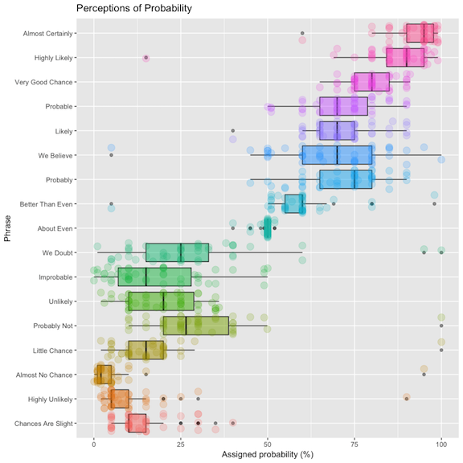
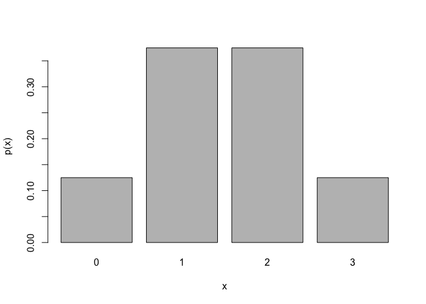
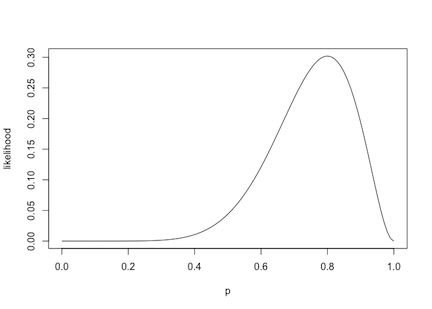
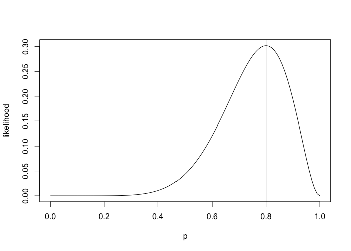

Week 1 lecture notes - PSYC 5316
Course outline
- Review of classical statistical methods (5 weeks)
- Basic probability
- distributions used for applied work
- sampling distributions and confidence intervals
- hypothesis testing
- common hypothesis tests (including t-test, anova, chi-square, etc.)
- Robust methods (3 weeks)
- bootstrapping
- robust measures of location (including trimmed means, Winsorized means, \(M\)-estimators, etc.)
- inferences based on robust measures
- Bayesian methods (5 weeks)
- Bayes' Theorem, priors, likelihoods, and posteriors
- estimating proportions and rates
- exact methods via conjugate priors
- approximate methods, using Markov chain Monte Carlo (MCMC)
- fitting models with JAGS and R
- Bayesian hypothesis testing
Basic definitions
probability functions
All of statistical inference deals with statements of probability. But what exactly is probability?
The following data comes from an online replication of the classic Sherman Kent study on perceptions of uncertainty. People were asked to assign a percentage of probability to different phrases.
Results:

As you can see, there is a lot of variability in our perceptions of uncertainty. Thus, it is very important to know exactly what we are talking about when dealing with probability. We will be very specific about these notions this semester.
So, to start – What exactly is probability?
Definition: a probability is a function \(p(x)\) that assigns "outcomes" \(x\) to real numbers \(p(x)\) so that the following properties hold:
- \(p(x)\geq 0\) for any \(x\)
- For any two mutually exclusive outcomes \(x\) and \(y\), we have \(p(x\text{ or }y)=p(x)+p(y)\)
- \(\sum p(x) = 1\), where the sum is taken over all possible outcomes \(x\)
Example: verify that the following mapping defines a probability:
| \(x\) | 0 | 1 | 2 | 3 |
| \(p(x)\) | 0.125 | 0.375 | 0.375 | 0.125 |
Note that we can also construct a bar plot of this probability:
x <- c(0, 1, 2, 3) p <- c(0.125, 0.375, 0.375, 0.125) barplot(p, names.arg=x, xlab="x", ylab="p(x)")

This bar plot forms an important visualization tool for us called a probability distribution. We'll talk more about this a bit later.
expected value and variance
Expected value is a generalization of the concept of mean (which you are already quite familiar with).
Definition: the expected value of a random variable \(X\) is given by
\[ E(X) = \sum_{x\in X}xp(x) \]
Expected value is found by multiplying each outcome by its associated probability, and then adding together all resulting products.
Example: consider the example we just did above. Then
\[ E(X) = \sum_{x\in X}xp(x) = 0\cdot 0.125 + 1\cdot 0.375 +2\cdot 0.375 + 3\cdot 0.125 = 1.5 \]
Note: you can also get the same thing in R very quickly via the following command:
sum(x*p)
Expected value is a useful concept in many ways:
- it allows us to define a notion of "mean" for ANY set of outcomes (even an infinite set)
- it gives us a very quick definition of variance!
Example: the variance of a random variable \(X\) is defined as \(E[(x-\mu)^2]\).
Before we compute this for our example distribution, lets check that it makes sense. \(E[(x-\mu)^2]\) represents our "expectation" of the squared difference from the mean. That is exactly how variance was defined in your past statistics courses.
Example: consider again our example distribution from earlier.
| \(x\) | 0 | 1 | 2 | 3 |
| \(p(x)\) | 0.125 | 0.375 | 0.375 | 0.125 |
| \(x-\mu\) | -1.5 | 0.5 | 0.5 | 1.5 |
| \((x-\mu)^2\) | 2.25 | 0.25 | 0.25 | 2.25 |
| \((x-\mu)^2\cdot p(x)\) | 0.28125 | 0.09375 | 0.09375 | 0.28125 |
So the variance is \(E[(x-\mu)^2]\) = 0.28125+0.09375+0.98375+0.28125 = 0.75
As before, this is pretty easy to do in R:
mu = sum(x*p) sum((x-mu)^2*p)
Special Distributions
Many common probability distributions are given by explicit formulas for their probability functions. Two that we'll talk about this week are the binomial and normal distributions.
Binomial distribution
The binomial distribution goes back to Bernoulli in 1713. It arises in situations where each experimental trial has only two outcomes, which we'll call success and failure (such trials are called Bernoulli trials).
Before presenting the general form of the binomial, lets try a simple example.
Suppose we flipped a fair coin three times. The probability of landing heads (which we'll call a "success") is \(p=0.5\). Consequently, the probability of landing tails (which we'll call "failure") is \(1-p=0.5\).
Let \(X\) denote the random variable that counts the number of successes in these three trials.
Some questions:
- what are the possible values (outcomes) for \(X\)?
- what is the probability of each outcome?
It is easy to see that we get the same probability distribution that we were working with earlier:
| \(x\) | 0 | 1 | 2 | 3 |
| \(p(x)\) | 0.125 | 0.375 | 0.375 | 0.125 |
If we think about this, it is not too difficult to come up with a mathematical process that generates these probabilities for the general case.
Suppose we have \(N\) trials, and the probability of success on any one trials is \(p\).
Then we know the following:
- the probability of each success is \(p\)
- the probability of each failure is \(1-p\)
- we have \(x\) successes
- we have \(N-x\) failures
- there are \({N\choose x}=\frac{N!}{x!(N-x)!}\) ways to arrange these \(x\) successes from the \(N\) trials
Thus, the general formula for the binomial probability function is:
\[ p(x) = {N\choose x} p^x(1-p)^{N-x} \]
Example 1
A coin is tossed 10 times. What is the probability of getting exactly 7 heads?
This problem corresponds to a binomial experiment, where there are 10 independent Bernoulli trials, and \(p=0.5\). Then we can calculate the probability via the binomial distribution:
\[ p(x=7) = {10\choose 7} (0.5)^7(0.5)^3 \]
Using R, we can calculate this as:
choose(10,7)*0.5^7*0.5^3
As we can see from the answer (0.117), this outcome is fairly unlikely
Example 2
Suppose you run a series of 5 independent replications of an experiment, each with fairly high power (say 80%). Suppose there is a true effect; that is, the null hypothesis is false. What is the probability of getting a significant result (i.e., rejecting the null) in all 5 experiments?
This situation can also be thought of using a binomial distribution. Each experiment is an independent trial with two outcomes: reject null, or fail to reject null. The probability of rejecting the null is 0.8. Then by the binomial distribution, we have
\[ p(x=5) = {5\choose 5} (0.8)^5(0.2)^0 = 0.328 \]
This might be surprising!
Some R functions
While we can do binomial calcuations from scratch, R has some nice built-in functions to handle these calculations. Any of the above calculations can be done using the dbinom function. As an illustration, the two previous examples could be computed using the following commands:
dbinom(x=7, size=10, prob=0.5) dbinom(x=5, size=5, prob=0.8)
digging deeper – Likelihoods
If we have time, we can talk about an extension of the binomial distribution. Suppose we flip a coin 10 times, and we see 8 heads. Do we believe this coin is fair?
Notice that this is a different problem than before. Here, we are given the number of successes, but NOT the probability of success on any one trial. This is called a likelihood function. Let's plot it:
x = seq(from=0, to=1, by=0.01) y = dbinom(x=8, size=10, prob=x) plot(x, y, type="l", xlab="p", ylab="likelihood")

This curve tells us which values of \(p\) are most likely to give us the data we observed; namely, 8 successes. Which value of \(p\) do you think is most likely?
You can test your prediction by adding the command abline(v=est), where est is the number for \(p\) you estimated.

Note: this estimator (0.8 in this case) is called the maximum likelihood estimate. It is literally the estimate for \(p\) which maximizes the likelihood function. That means it is the estimate for \(p\) that is most likely, given the observed data. This is a fundamental tool in statistical modeling.